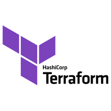

SCC Brasil is a Service Provider, we are supporting companies on their Cloud Journey.
So most of our work depends much of the individual requirements of each customers, we do not
offer Products or Standard Software.
But often the same requirements have to be implemented for
various Customers.
Common problems and use-cases many clients need for AWS and DevOps.
These solutions can be re-used, maybe you have to adapt it a bit for you individual needs, but
probably will serve almost out of the box for your current needs.
We are offering these solutions as Open Source to you and the AWS Community to accelerate your Cloud Journey and
hope you find it useful for your company and also give as a feedback and ideas for changes or improvements.
Pipeline for automatic CloudFormation Deployments
Are you using CloudFormation as Infrastructure as Code Tool but you still deploy your Templates manually on the Web Console?
You should definitelly do this by Pipeline (CI/CD) to avoid changes made in the Template and
Repo are not being promoted to the Stages or vice versa changes not being committed to the Templates Repo are
being deployed on the CloudFormation Console.
There are various options: Jenkins, Azure DevOps, Gitlab, Bitbucket and more.
But still it will be a considerable effort to create all Pipelines manually. CloudFormation Deployment Pipeline
Do you need an automation to deploy your CloudFormation Templates to your AWS Account(s)?
A Pipeline or a tool that will automatically create a CloudFormation Deployment Pipeline for each of your stacks ?
If so take a look into this solution from us, that will allow you to create these pipelines fully automatically
by a Generator. The Pipelines will be in AWS CodePipeline. Once created you can trigger them to create or update
your Template and define this as the standard process for IaC changes.
An overview about this Generator in this video :
Are you using CDK as IaC Tool but not yet setup a Pipeline for the Deployment Process?
If so, these to 2 solutions might be of interest for you.
CDK CodePipeline
The first is a AWS CodePipeline you can integrate in your CDK project, which will create
a CodePipeline for your CDK project.
Once deployed to your account (or a toolchain account), it will automatically deploy changes in your
CDK code to the stages.
The project also shows how to use a super class for the pipeline, so you can sublass various classes from it - if you need this.
More Infos you will find in this blog:
CodePipeline with CDK Python and generic Superclass
And this is the Github Repo for the project : Git
Wolfgang
Unger CDK Pipeline
Multi Branch CodePipeline
Maybe your are already using AWS CodePipeline to deploy your CDK Code and infrastructure to your Stage Accounts. Perfect.
This works fine, but only on your main/master branch.
There is no build in functionality with CodePipeline that supports building mulitple feature branches.
For small companies and projects this is ok, but if you work on a bigger projects with lets say 20 developers
working on the CDK and infrastructure, 3-5 open feature branches the same time, you will miss this feature.
You want to test your feature branches before merging them back into the main branch.
If have implemented a multi feature branch pipeline, it is available in my github account.
Read more about it in this blog : Blog - Feature Brach Pipeline
or you can have a look directly in our Github Repo: Pipeline multi-branch | Github Wolfgang Unger
Instance Scheduler Lambda
There are a number of ways to reduce your AWS bill, you can use the AWS Cost Explorer to analyze usage and costs,
we have an comprehensive guide to make this analisys in the blog Blog - Cost optimization strategies Instance Scheduler Lambda
But if you already have your basis covered, there is one simple lambda that can help you reduce even more your costs.
Usually the non production environments, don't neeed to be up 24/7, so this lambda can reduce your compute costs
more than 50% on non-production environments.
This simple Lambda Function can stop and start your EC2 and RDS instances once you have tagged them with a dedicated Tag.
Also autoscaled instanced are supported
More detailed informations in this blog : Blog - Schedule/Stop your instances automatically
or you can have a look directly in our Github Repo: Cost savings lambda | Github Wolfgang Unger
Terraform Example Project

If you start to work with terraform will maybe ask yourself, how should you structure your
terraform project?
You can find various example repos and projects in the web, but not all will server for your use
case.
In this tutorial I will try to show a setup which will be usefull in quite a lot of
situations
Of yourse you will have to adapt it for your special needs, but it should serve as a good
generic solution to start.
More detailed informations in this blog : Terraform example structure
or you can have a look directly in our Github Repo: Github
Wolfgang Unger - Terraform
IPv6 IaC Templates
February 2024 AWS started to charge not only unused IP addresses but by now all public IP Adresses.
Together with the NAT costs, which have increased also a lot over the years, a VPC is now a considerable cost factor especially for small workloads.
The costs on IP addresses are also a way of AWS to push more the usage of IPv6.
Time to have a closer look on IPv6, because we are running out of IPv4 addresses and sooner o later we have to switch to IPv6.
We have published IPv6 examples for
CloudFormation, CDK and Terraform
The repo (under construction) is :
Stay tuned ! Github
Wolfgang Unger - AWS IPv6